概述
插件介绍
基于核心：
◆Drill_CoreOfActionSequence 系统 - GIF动画序列核心
高级肖像插件：
◆Drill_ActorPortraitureExtend 战斗UI - 高级角色肖像
只需要上述两个插件即可。
高级角色肖像 组成结构比较复杂，你需要先了解 GIF动画序列核心 才能配置。
具体可以去看看：
关于GIF动画序列核心.docx
关于GIF动画序列核心编辑器.docx
另外，Drill_ActorPortraiture角色肖像 插件是低配的简单插件，可以单独使用，如果你对角色肖像的动作精细要求没有那么高，可以先试试那个插件。
插件关系
高级角色插件的关系如下图。

高级角色肖像
原理
该插件实际上内嵌了一套自主向动画序列进行调用的方法，所以设置都是固定好的。
（战斗时大部分行为都是 一瞬间 的，通过事件很难捕获到，直接调取就简单许多。）

每个肖像都对应两个动画序列：
前视图GIF动画序列；
背景图GIF动画序列。
（动画序列 和 GIF动画序列 是同一个东西，只是称呼不同）
![C:\Users\lenovo\AppData\Roaming\Tencent\Users\1355126171\QQ\WinTemp\RichOle\S_C]\@0Y3`F_E`Q8YQ8NXV[G.png](./MediaFolder/media/image4.png){width="3.6083333333333334in" height="1.9373600174978127in"}
动画序列不一定非要是角色立绘，也可以是环绕的魔法特效等GIF。
触发时机
[]{#触发时机-1 .anchor}触发时机与事件页的功能相似。
如果触发同时满足多个触发时机，则序号大的触发时机优先。
比如：3的"量子妹受伤"的条件满足时，1和2的触发会被跳过。
（量子妹受伤的条件只出现一帧，然后触发一个动作）
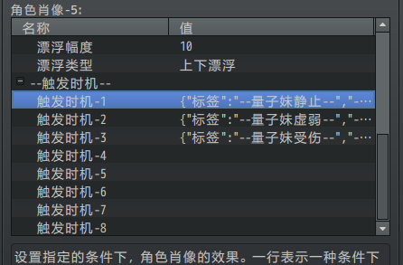{width="3.75in" height="2.4596773840769903in"}
满足条件时全部满足才能触发：
（"是否添加"与事件页的勾选是一样的效果，你可以把触发时机看做事件页）
 {width="2.6083333333333334in"
height="2.5732436570428696in"}
{width="2.6083333333333334in"
height="2.5732436570428696in"}
 {width="2.5833333333333335in"
height="2.121447944006999in"}
{width="2.5833333333333335in"
height="2.121447944006999in"}
触发条件（一帧）
根据 攻击者与被攻击者 的关系，触发条件有下列情况：
（具体可以去看看 "攻击者与被攻击者.docx" ）
由于该插件是 角色肖像，所以敌我关系以 我方 为准。
我方主动 -> 我方被动 对应：自己被攻击
我方主动 -> 敌方被动 对应：主动攻击目标
敌方主动 -> 我方被动 对应：自己被攻击
敌方主动 -> 敌方被动 无对应
根据关系，伙伴直接对同伴造成伤害，也会被条件"自己攻击被命中时-HP伤害"捕获。
 {width="3.4833333333333334in"
height="3.2327777777777778in"}
{width="3.4833333333333334in"
height="3.2327777777777778in"}
该条件只在满足后一帧内结束，常用于播放动作。
假设敌人攻击量子妹5下，全命中。
因为每下都在不同的帧，所以此条件会触发5次。
如果你开了状态元切换，那么状态切换会执行5次。
如果你开了动作元播放，那么相同动作元会播放5次。
（相同优先级的动作元在未播放完时不会被中断覆盖，可见"关于GIF动画序列核心.docx"的 优先级 定义。）
从零开始设计
在开始设计前，你需要先了解一下"关于GIF动画序列核心"。
以及小工具 GIF动画序列编辑器 。
1.设置一个目标
首先要想明白自己想做一个什么样角色立绘，有哪些动作、状态，然后评估一下工作量，这一点很重要。
这里拿一个示例中已经有的例子来说明一下，即：能够在战斗中变身的量子妹。
1）前视图
考虑到本人美术能力有限，又实在不想画，所以只考虑两个状态和一个动作。
分别为：
状态 - 量子妹静止
状态 - 量子妹虚弱
动作 - 量子妹受伤
由于之前有量子妹还有进化成红色版本的能力，所以还包含：
状态 -- 红量子妹静止
状态 -- 红量子妹虚弱
动作 -- 红量子妹受伤
小工具中，只能通过输入状态元和动作元来进行战斗时的模拟，
而在战斗中进行的实时反应需要在 该插件 中配置，后面会提及。
 {width="4.866666666666666in"
height="3.1340955818022747in"}
{width="4.866666666666666in"
height="3.1340955818022747in"}
2）背景图
背景包含一个状态和一个动作：
状态 - 量子妹背景(静止)
动作 - 量子妹背景(受伤)
变身后的红色版本：
状态 -- 红量子妹背景(静止)
动作 -- 红量子妹背景(受伤)
 {width="5.041666666666667in"
height="3.031312335958005in"}
{width="5.041666666666667in"
height="3.031312335958005in"}
不经意加起来，一共10个gif片段！
如果随便设置一下，你就会发现你要配置的东西 呈指数级 增长。
所以在最开始设计时，不要一拍脑袋就想把 点头、微笑、奔跑、跳跃、下蹲、格挡、轻攻击、重攻击、大招、防御 全部情况都考虑进来，工作量是非常恐怖的。
所以，首先一定要想好要做几个状态元、几个动作元。
2.起草资源
你需要在GIF动画序列编辑器中将目标动作元、状态元进行设计，以准备给插件调用。
具体介绍去结合"关于GIF动画序列核心"和GIF动画序列编辑器。
由于高级角色肖像插件中，分为 前视图 和 背景图，这两个都是GIF动画序列。
那么对应的，要在动画序列中，建立两个完整的肖像：
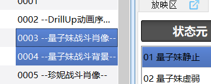{width="3.125in" height="1.2486198600174978in"}
你也可以只设计肖像，不要背景。（背景动画序列设0即可）
实际上作者我只画了两个形象......其它都是用ps稍微变色的。（后面会慢慢加吧......）
虚弱状态 和 受伤动作 使用的是同一个资源......
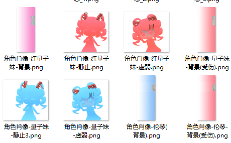{width="3.2291666666666665in" height="2.0006780402449693in"}
需要注意的是，导入的图片，要注意资源不重名。重名的资源在编辑器中会提示，因为所有资源都会转到同一个文件夹中。
另外，通过编辑器配置好的资源，会自动将资源筛选并转移到rmmv工程的文件夹
img/Special__actionSeq中，不需要对这个文件夹作多余操作。
3.配置资源
1）前视图
状态元编号和动作元编号 没有先后顺序关系，因为调用是通过 名称 进行调取的。
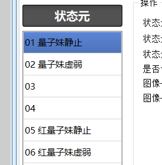{width="1.8308716097987752in" height="1.8576388888888888in"} 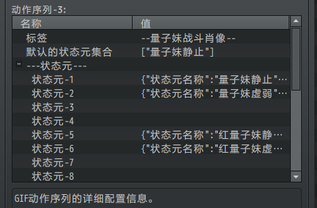{width="2.841666666666667in" height="1.8634897200349956in"}
这里，考虑到动作元之间存在优先级关系，红量子妹 的优先级 > 量子妹 的优先级，
所以红量子妹设置了 状态元优先级30，动作元优先级31。
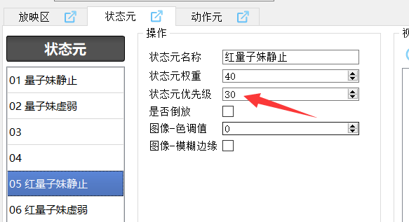{width="3.120833333333333in" height="1.6953051181102363in"}
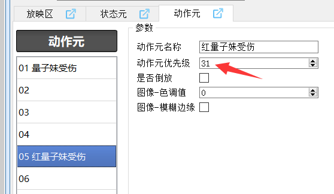{width="3.120833333333333in" height="1.8106550743657044in"}
设置优先级这样可以 避免 红量子妹状态时误播放 (蓝)量子妹受伤 的动作。
2）背景图
背景图有4个配置。
注意，这里状态元命名最好不要和之前立绘的状态元重名了。
（立绘叫 "量子妹静止"， 背景叫 "量子妹背景(静止) " ）
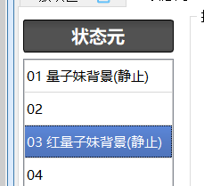{width="1.6458497375328085in" height="1.5019805336832897in"} {width="3.466666666666667in" height="1.5407403762029745in"}
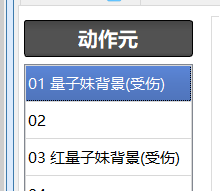{width="1.2708333333333333in" height="1.1044706911636046in"} ![C:\Users\lenovo\AppData\Roaming\Tencent\Users\1355126171\QQ\WinTemp\RichOle\O09Y[A]]W)\@3[]S(J7GJRLE.png](./MediaFolder/media/image20.png){width="4.033333333333333in" height="1.1203718285214348in"}
不重名可以 防止 在肖像配置时搞混淆。
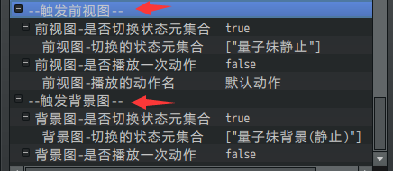{width="3.9166666666666665in" height="1.7068044619422573in"}
4.配置样式
1）动画序列对应
首先将 肖像序列和背景序列 对应上：
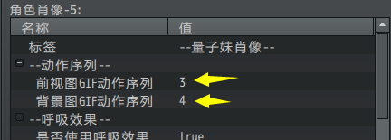{width="3.257311898512686in" height="1.168711723534558in"} 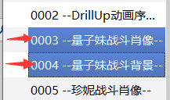{width="1.9625in" height="1.1586712598425197in"}
2）触发时机 配置
触发时机与事件页的功能相似，有先后顺序，序号越大，优先级越高。
你可以理解为：
一个行走图 对应 一个事件页，多个事件页可以用重复的行走图；
一个状态元/动作元 对应 一个触发时机，多个触发时机可以用重复状态元；
你还可以在触发时机中，添加开关控制；
具体可以看看前面章节 触发时机 。
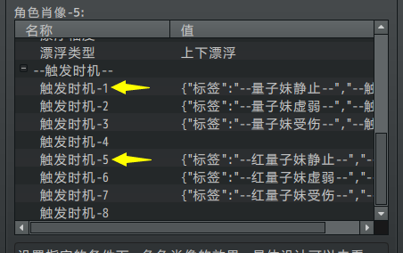{width="3.283333333333333in" height="2.06298009623797in"}
3）触发时机的 状态元与动作元
每个时机都对应4种模式切换，分别为：
前视图切换状态元、前视图播放动作、背景图切换状态元、背景图播放动作。
切换状态和播放动作可以同时开启；同开后，会先播放动作，然后进入状态。
{width="3.308248031496063in" height="1.4416666666666667in"}
5.细节调整
下面点开敌群进行测试。
1）中心锚点
如果你的资源图片不是等宽高的，那么你需要注意图像的中心锚点，
GIF动画序列编辑器 的视图，中心锚点在正中心
前视图的中心锚点在正下方，背景图的中心锚点在左下角。
![C:\Users\lenovo\AppData\Roaming\Tencent\Users\1355126171\QQ\WinTemp\RichOle\E$1O095JCGT]E8N@[4PDGWW.png](./MediaFolder/media/image25.jpeg){width="3.0087117235345584in" height="2.7416666666666667in"} 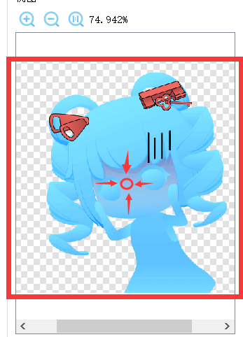{width="1.9388888888888889in" height="2.6938932633420825in"}
2）资源调整
由于角色肖像的 前视图背景图是直接对 所有肖像 进行设定的，不能单独修改偏移。
 {width="3.609985783027122in"
height="2.3645833333333335in"}
{width="3.609985783027122in"
height="2.3645833333333335in"}
因此，你只能根据实际个例情况，对编辑器中的 资源图片 进行ps修改。
其他说明
如果你在配置过程中遇到了无法解决的问题，
可以去看看"关于GIF动画序列核心.docx"文档中的 常见问题 章节。